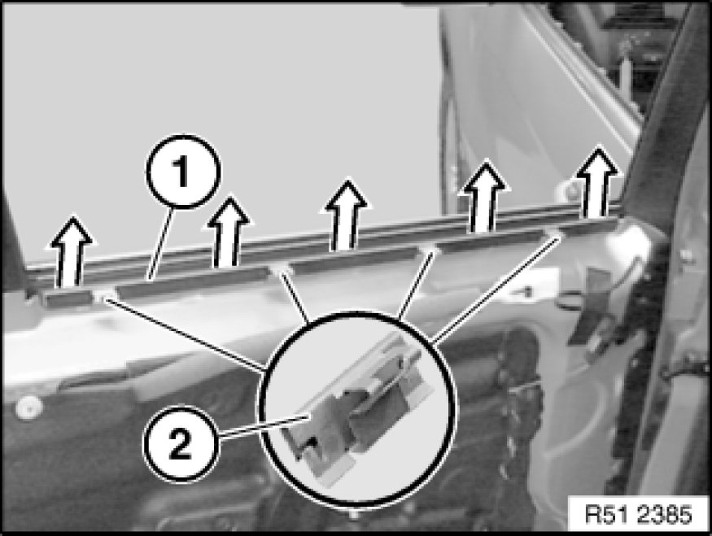

51 22 351 Replacing Window Cavity Seal on Inner Left or Right Rear Door
51 22 351 - Replacing window cavity seal on inner left or right rear door

Necessary preliminary tasks:
- Remove rear door trim panel Removing and Installing Left or Right Rear Door Trim Panel

Pull window cavity seal (1) off rear door.
Installation:
If necessary, replace faulty retainer (2).